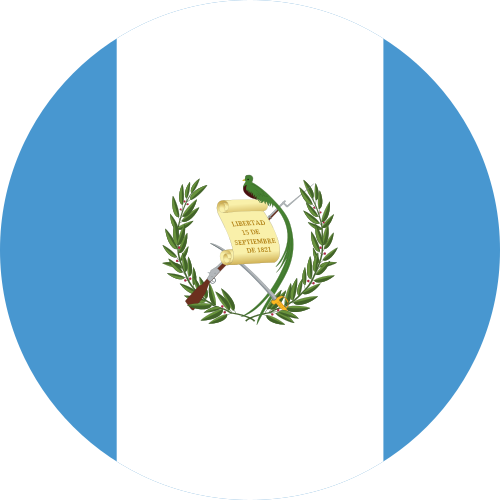

ENLACE TV
Domingos:
6:00 p.m. USA, México y Colombia
5:00 p.m. Centroamérica.
6:30 p.m. Venezuela.
8:00 p.m. Argentina.
enlace.org
104.7 FM BENDICIÓN
Villalonga, Bs. As.
Horarios Dr. Armando Alducin:
De Lunes a viernes
7:00 a.m. y 10:00 p.m.
Twitter: @fm_bendicion
RADIO RESTAURACION
98.8 FM - La Paz, Bolivia
Horarios Dr. Armando Alducin:
Sábado 2:00 p.m. y 6:00 p.m.
Domingo 9:00 a.m. y 6:00 p.m.
JESUCRISTO EN SINTONIA
Radio on Line - Chile
Horarios Dr. Armando Alducin:
De Lunes a Viernes
10:00 a.m. y 11:00 p.m.
CIELOS ABIERTOS TU RADIO
Radio on Line - Colombia
Horarios Dr. Armando Alducin:
Viernes 3:00 p.m.
Domingo 3:00 p.m.
RADIO LIFE 89.5 FM
San Pedro Montes de Oca, Costa Rica
Horarios Dr. Armando Alducin:
Sábado 12:30 p.m.
Web: lifemedios.com

RADIO CULTURA TGN
100.5 FM y 730 AM - Guatemala
Alcance a Nivel Nacional con 23 repetidoras
Web: radiocultural.org
HALLEL RADIO HONDURAS
Radio on Line
Horarios Dr. Armando Alducin:
Lunes a Viernes
1:00 a.m., 7:00 a.m. y 5 p.m.
Web: hallelradio.org
RADIO PESCA 103.7 FM
San Agustin Loxicha, Oaxaca
Horarios Dr. Armando Alducin:
Lunes a Viernes
12:15 p.m. y 20:30 p.m.
Web: radiopesca.net
RADIO FIEL Y VERDADERO
92.3 FM La Oroya, Perú
Horarios Dr. Armando Alducin:
Lunes a Sábado 12 a.m. y 6 p.m.
Domingos 7:00 a.m.
LATINA 107.9 FM
Maracaibo, Venezuela
Horarios Dr. Armando Alducin:
Domingos 12:00 a.m. y 1:00 p.m.
Web: latina107.co.ve